Nueva Gales del Sur (NGS)
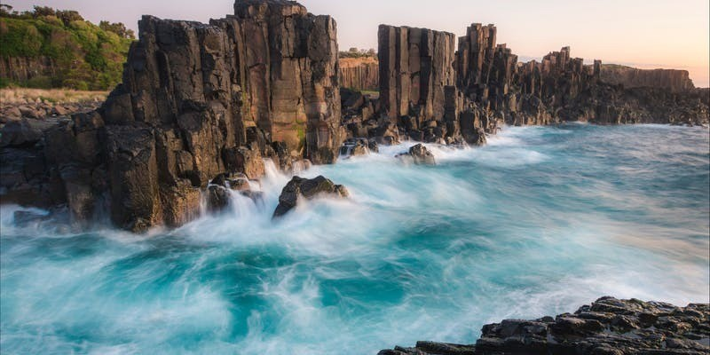 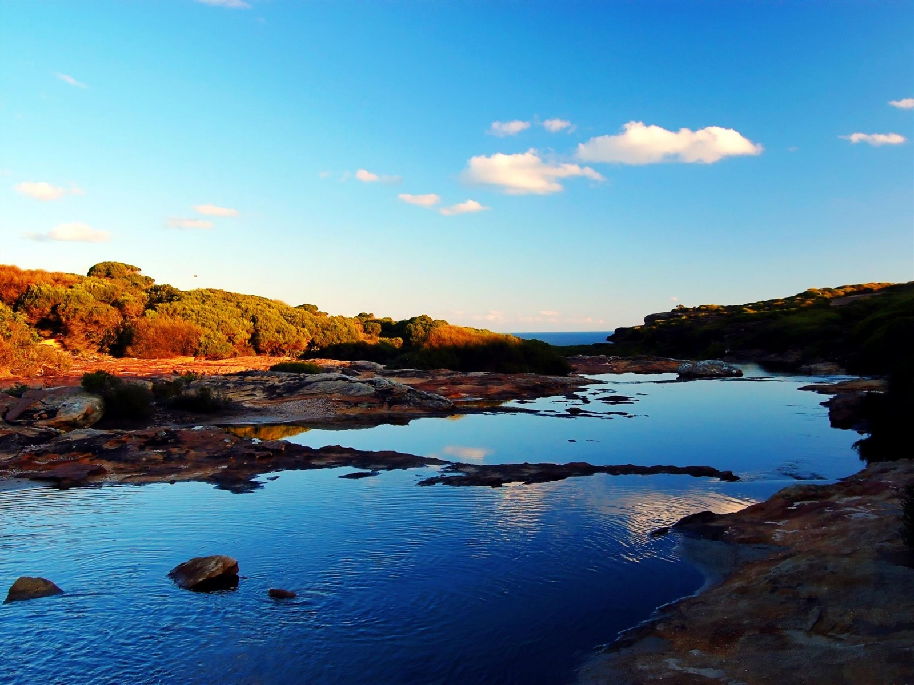 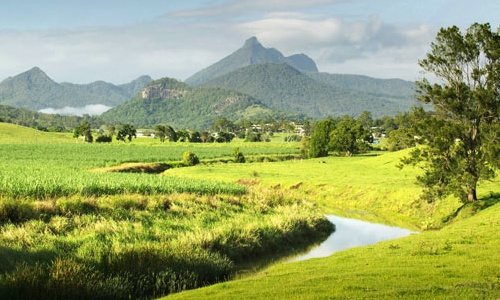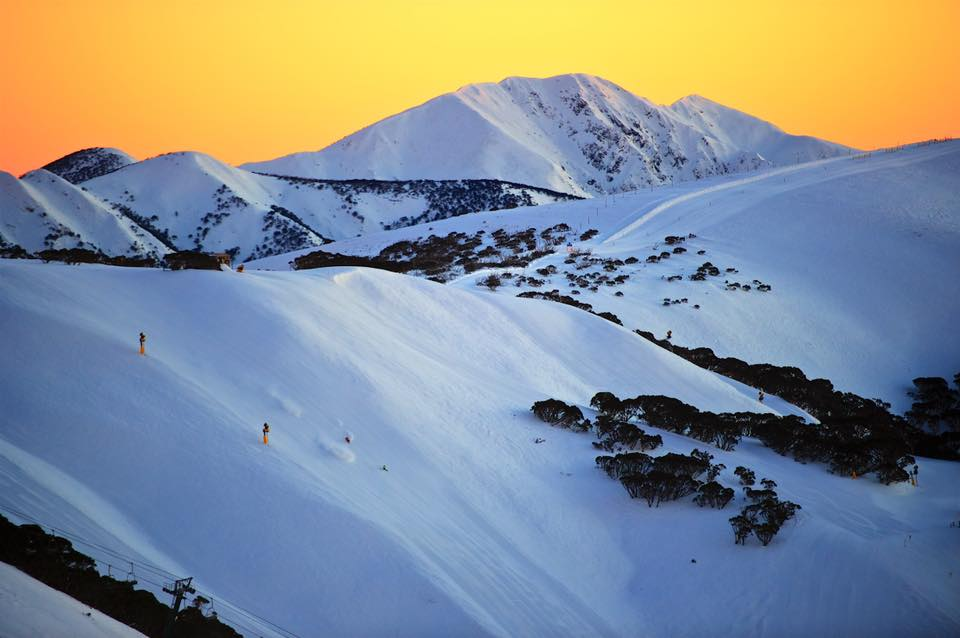Descubre pueblos históricos, cultura cosmopolita y montañas nevadas cerca de exuberantes parques nacionales. Encuentra tu lugar ideal para una escapada en el outback australiano, la ciudad, las montañas o la costa. Nueva Gales del Sur lo tiene todo, desde pintorescos pueblos rurales hasta una paradisíaca costa. Vuela en globo aerostático por los viñedos, practica ski en las Montañas Nevadas, recorre las blancas arenas de Port Stephens y descubre el árido outback australiano en los alrededores del histórico Broken Hill. Sydney, la capital, es un lugar que no puedes dejar de visitar. Los edificios históricos le dan encanto a la ajetreada ciudad y sus pintorescos suburbios costeros. Pasea por la antigua prisión de la Isla Cockatoo antes de tomarte un coctail en el bar frente al mar. Haz un picnic con vistas del río en los Jardines Botánicos Reales de Sydney, disfruta de una exquisita cena en el muelle y observa un espectáculo en la Ópera de Sydney. Visita Hunter Valley, una hermosa región vitivinícola con excelentes restaurantes. Maravíllate con un paseo en globo aerostático al amanecer o recorre el área en bicicleta. Pasa el día visitando cervecerías, cavas y fábricas de queso. Newcastle es un destino popular por su música, el arte, la cultura y el surf donde podrás encontrar ocho playas. Observa a los delfines en el Parque Marino de los Grandes Lagos de Port Stephens, recorre las dunas de arena e investiga la cultura del pueblo aborigen Worimi. Bucea con los peces de arrecife en el Parque Marino de las Islas Solitarias en el Puerto de Coffs. Relájate en la Bahía de Byron, un centro artístico que ofrece lugares para acampar y observar el agua y la migración de las ballenas. Desafíate en las Montañas Azules en una caminata de tres días desde Katoomba hasta las Cuevas de Jenolan. Súbete a uno de los trenes más empinados del mundo a través del bosque tropical o desciende en rápel por una cascada. Las Montañas Nevadas ofrecen pistas de ski en invierno, excelentes platos en acogedores cabañas e increíbles vistas del pico más alto de Australia, el Monte Kosciuszko. Los paisajes de color óxido en los alrededores de Broken Hill anticipan el outback australiano. La elegante arquitectura del siglo XIX contrasta con los desechos producidos por más de 130 años de actividad minera. Encontrarás plantas de sal y ejemplares de emú en el trayecto hasta Silverton, un pueblo fantasma donde se filmaron las películas de Mad Max. No te quedes sin visitar las zonas rurales de Nueva Gales del Sur. Tamworth, un antiguo pueblo minero, es conocido por su música country, la búsqueda de gemas y las artesanías rurales tradicionales. El pintoresco pueblo de Tenterfield, con arquitectura histórica del siglo XIX, es un muy buen punto de partida para explorar los parques nacionales de las Mesetas de Nueva Inglaterra.
Queensland (QLD)
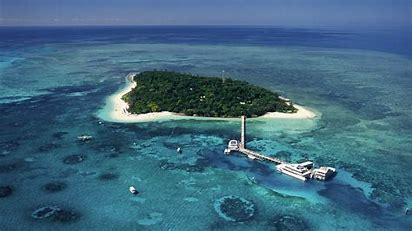 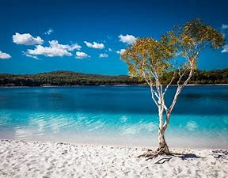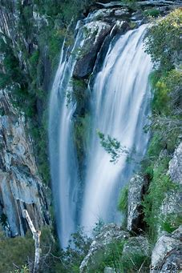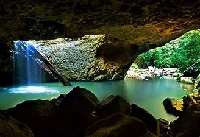Queensland, estado del noreste de Australia, ocupa la parte más húmeda y tropical del continente. Limita al norte y al este con el Mar del Coral (una bahía del suroeste del Océano Pacífico), al sur con Nueva Gales del Sur, al suroeste con Australia del Sur y al oeste con el Territorio del Norte. La capital es Brisbane, en la costa sureste del estado. Queensland, el segundo más grande de los estados de Australia, ocupa casi una cuarta parte del continente. El estado es más del doble del tamaño del estado estadounidense de Texas y siete veces más grande que el Reino Unido. En términos de ocupación de la tierra, sin embargo, Queensland es de hecho el estado más grande de Australia, con un área ocupada mayor que la de toda Australia Occidental. También es el estado continental más descentralizado, con la mayoría de su gente dispersa a lo largo de la costa oriental a lo largo de una distancia de 1.400 millas (2.250 km). El resto de la población está dispersa en casi todo el vasto interior, lo que plantea graves desafíos de acceso y comunicación. Con su gran área y pequeña población, la economía de Queensland se basa esencialmente en los recursos, sus exportaciones predominantemente de productos pastoriles, agrícolas y minerales. Más de la mitad de Queensland se encuentra al norte del Trópico de Capricornio, y los primeros europeos allí, que no estaban familiarizados con la vida en los trópicos, experimentaron mucha adversidad en sus intentos iniciales de colonizar la región. Sin embargo, el clima, anteriormente un hándicap, finalmente se convirtió en una ventaja. En los tiempos contemporáneos, Queensland, bajo el autoproclamado título de "Estado del Sol", ha cosechado los beneficios del rápido crecimiento del turismo, algunas atracciones son playas de surf de arena, estuarios verdes, islas pintorescas y la Gran Barrera de Coral, que se extiende por 1.250 millas (2.000 km) de la costa del Mar de Coral de Queensland. El estado también experimentó un rápido crecimiento de la población a través de la migración del "cinturón solar" a las regiones costeras más atractivas, aunque la población en el interior ya escasamente poblado continuó disminuyendo. Área 668,207 millas cuadradas (1,730,648 km cuadrados). Población (2016) 4.703.193.
Australia Meridional (SA)
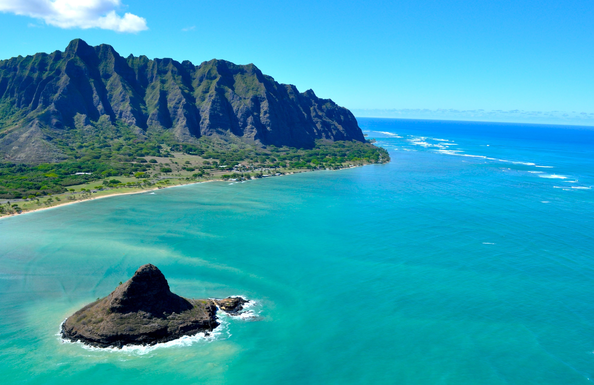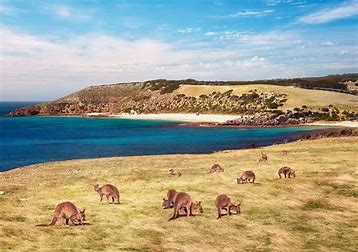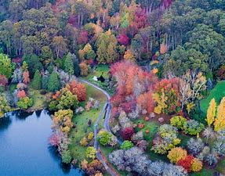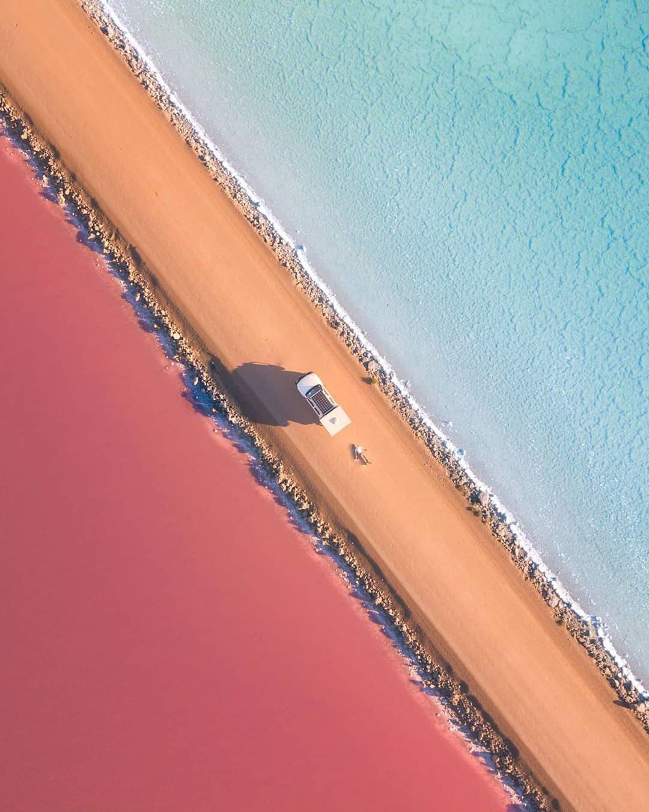Australia del Sur, estado de Australia centro-sur. Ocupa una de las partes más secas y estériles del continente, pero su franja sur consiste en tierras bien regadas y fértiles y es donde se encuentra la mayor parte de la población. Limita con Australia Occidental al oeste, el Territorio del Norte al norte, Queensland al norte y al este, y Nueva Gales del Sur y Victoria al este. Al sur se encuentra frente al Gran Bight australiano, un mar marginal del sur del Océano Índico (llamado Océano Austral en Australia). La capital es Adelaida, en la costa sur. Ocupando aproximadamente una octava parte de la superficie total de Australia, Australia del Sur es la cuarta en tamaño entre los ocho estados y territorios del país. Su gente representa menos del 8 por ciento de la población australiana, ocupando el quinto lugar entre las poblaciones de los estados y territorios. Las partes asentadas de Australia del Sur forman el extremo occidental de una media luna de tierra estrechamente poblada y productiva en el sureste de Australia, que es el corazón económico del país. Los vínculos comerciales del estado son más fuertes con Melbourne y Sydney. Área 379,725 millas cuadradas (983,482 km cuadrados). Población (2016) 1.676.653. Australia del Sur es el más seco de los estados australianos. Solo alrededor de una quinta parte del área recibe precipitaciones anuales de más de 10 pulgadas (250 mm), y menos de la mitad de eso tiene más de 16 pulgadas (400 mm). Las precipitaciones más altas se producen a lo largo de las costas del sur y las cordilleras de norte a sur de Mount Lofty y Flinders. Las caídas más altas ocurren cerca del Monte Lofty (47 pulgadas [1,200 mm]), y las más bajas ocurren en las cercanías del lago Eyre (6 pulgadas [150 mm] o menos). Con influencias climáticas marítimas dibujadas tierra adentro por spencer Gulf y Gulf St. Vincent, la zona costera sur del estado se ha caracterizado por tener un clima "mediterráneo", con inviernos húmedos suaves a frescos y veranos secos y calurosos. Por el contrario, las precipitaciones en el interior árido son altamente erráticas. Las dos influencias climáticas dominantes derivan del Océano Austral al sur y del interior continental al norte. Estos pueden producir fuertes contrastes de temperatura en cualquier época del año, más marcadamente en verano, cuando los vientos abrasadores del norte pueden ceder el paso en cuestión de horas a los vientos frescos del sur frente al océano.